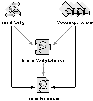
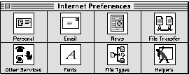
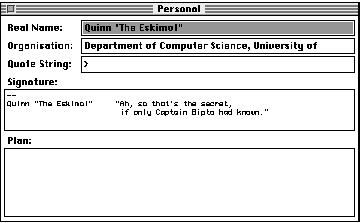
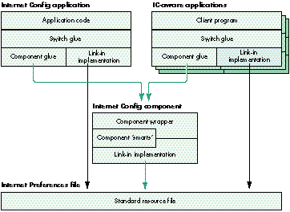
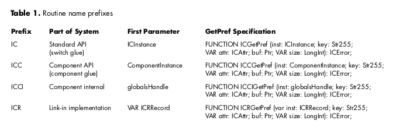

Having to enter the same Internet preferences, such as e-mail address and news
server, into multiple applications is bothersome not just for users, but also for
developers who must create the user interface associated with them. The Internet
Configuration System (IC) provides a simple user application for setting preferences,
and an API for getting the preferences from a database that's shared by all applications.
It's easy to add IC support to your application and take advantage of the flexibility
gained by IC's use of the Component Manager -- a valuable technique in itself.
Preferences, like nuclear weapons, proliferate. At times it seems that the major
developers are engaged in a "preferences race," where each one tries to gain the upper
hand by adding a dozen new preferences in each new release. Like the arms race, the
preferences race is obviously counterproductive, even dangerous, and yet no one
knows how to stop it.
Some of the worst offenders are Internet-related applications. How many times have
you had to enter your e-mail address into a configuration window? And what about
your preferred type and creator for JPEG files? Doesn't this just seem like a waste of
your time? The Internet Configuration System, or Internet Config for short, spares
everyone this trouble. And it spares developers the complexities of implementing these
preferences in each application.
This article takes you inside Internet Config. Take a good look at the design: IC
implements its shared library as a component, and uses switch glue to provide a
default implementation if the component is absent. Using the Component Manager to
implement shared libraries is a helpful technique not just for IC, but for other APIs as
well. Note too that Internet Config is useful for more than its name implies. For
example, the extension-to-file-type mapping database is useful for any program that
deals with "foreign" file systems. Indeed, IC is a perfectly valid mechanism for storing
private preferences that have nothing to do with the Internet.
Although IC is intended as an abstract API, all its source code is placed in the public
domain -- a condition of its development. This lets me illustrate the text with snippets
from the actual implementation and gives you full access to the source code. Both the IC
user's kit and the IC developer's kit, which contain code and documentation, are
included on this issue's CD. Note that Internet Config was developed independently and
is not supported by Apple.
The latest versions of the kits are always available from the ftp sites
ftp://ftp.share.com/pub/internet-configuration/ and
ftp://redback.cs.uwa.edu.au/Others/Quinn/Config/. In addition, the user kit is
available from UMich and Info-Mac mirrors around the world.*
As with any new piece of software intended to be widely adopted, Internet Config needs
developer support in order to be successful. I hope this article raises the awareness of
IC in the developer community and prompts some of you to support it.
Before going inside Internet Config, it's important to know how the system works as a
whole. The best way to do this is to get a copy of the Internet Config application and run
it (there's a copy on this issue's CD), but if you're too relaxed to do that right now,
keep reading for a description of the basics. We'll look at IC first from the user's
perspective and then from the programmer's point of view.
THE USER'S PERSPECTIVE
To the user, Internet Config is a proper Macintosh application. It supports the standard
menu commands New, Open, Save, Save As, and so on. The only difference is that the
files it operates on are preferences files. Figure 1 shows Internet Config and its
related files.

Figure 1. Internet Config and its related files -- what the user sees
The first time the Internet Config application is run, it installs the Internet Config
Extension into the Extensions folder and creates a new, blank Internet Preferences file
in the Preferences folder. It then displays the main window, shown in Figure 2, which
allows the user to edit the preferences.

Figure 2. The Internet Config application's main window
Each of the buttons in the main window displays another window containing a group of
related preferences. For example, the Personal button brings up the window shown in
Figure 3. The user enters preferences into each of these windows and then quits and
saves the preferences.

Figure 3. The Personal preferences window
From this point on, the user never has to enter those preferences again. Any IC-aware
program the user runs simply accesses the preferred settings without requiring them
to be reentered. This makes the user very happy (we presume).
Users can even run IC-aware applications "out of the box" -- they don't have to run
Internet Config first. If the Internet Config Extension isn't installed, IC-aware client
applications access the Internet Preferences file directly instead of through the
extension (as shown by the black arrows in Figure 1). The way this is done is
described later in the section "The Inner Workings of an API Routine."
THE PROGRAMMER'S PERSPECTIVE
To programmers, Internet Config consists of a set of interface files that define the API,
and a library to be statically linked to their programs. IC can be used from all of the
common Macintosh development environments: MPW, THINK, and Metrowerks; Pascal
and C; and 680x0 and PowerPC. The examples in this article, like IC itself, were
written in THINK Pascal.
What's in an IC preference. Before getting to the details of the API, you need to
know more about IC preferences. In IC, a preference is an item of information that's
useful to the client application program. Each preference has three components: its
key, its data, and its attributes.
In the e-mail address preference, for example, the key is the string "Email". If you
pass this string into IC, it returns the preference's data and attributes. By convention,
the data for the key "Email" is interpreted as a Pascal string containing the user's
preferred e-mail address.
IC's core API routines. Internet Config has the following core API routines.
Although the API has a lot more depth, these four routines are all you need to program
with IC.
FUNCTION ICStart (VAR inst: ICInstance; creator: OSType): ICError;
FUNCTION ICStop (inst: ICInstance): ICError;
FUNCTION ICFindConfigFile (inst: ICInstance; count: Integer;
folders: ICDirSpecArrayPtr): ICError;
FUNCTION ICGetPref (inst: ICInstance; key: Str255; VAR attr: ICAttr;
buf: Ptr; VAR size: LongInt): ICError;
The ICStart routine is always called first. Here you pass in your application's creator
code so that future versions of IC can support application-dependent preferences.
ICStart returns a value of type ICInstance; this is an opaque type that must be passed to
every other API call. ICStop is called at the termination of your application to dispose
of the ICInstance you obtained with ICStart.
ICFindConfigFile is called immediately after ICStart. IC uses this routine to support
applications with double-clickable user configuration files, a common phenomenon
among Internet applications. If you need to support these files, see the IC programming
documentation; otherwise, just pass in 0 for the count parameter and nil for the
folders parameter.
The ICGetPref routine takes a preference key and returns the preference's attributes
in attr and its data in the buffer pointed to by buf. The maximum size of the buffer is
passed in as size, which is adjusted to the actual number of bytes of preference data.
The simplest example. The program in Listing 1 demonstrates the simplest
possible use of IC technology. All it does is write the user's e-mail address to the
standard output. This program calls the four core API routines: it begins by calling
ICStart and terminates with an ICStop call; it calls ICFindConfigFile with the default
parameters and uses ICGetPref to fetch the value of a specific preference -- in this
case the user's e-mail address.
Listing 1. The simplest IC-aware program
PROGRAM ICEmailAddress;
{ The simplest IC-aware program. It simply outputs the user's }
{ preferred e-mail address. }
USES
ICTypes, ICAPI, ICKeys; { standard IC interfaces }
VAR
instance: ICInstance; { opaque reference to IC session }
str: Str255; { buffer to read e-mail address into }
str_size: LongInt; { size of above buffer }
junk: ICError; { place to throw away error results }
junk_attr: ICAttr; { place to throw away attributes }
BEGIN
{ Start IC. }
IF ICStart(instance, '????') = noErr THEN BEGIN
{ Specify a database, in this case the default one. }
IF ICFindConfigFile(instance, 0, NIL) = noErr THEN BEGIN
{ Read the real name preferences. }
str_size := sizeof(str);{ 256 bytes -- a similar construct }
{ wouldn't work in C }
IF ICGetPref(instance, kICEmail, junk_attr, @str, str_size)
= noErr THEN BEGIN
writeln(str);
END; { IF }
END; { IF }
{ Shut down IC. }
junk := ICStop(instance);
END; { IF }
END. { ICEmailAddress }
The IC API just described is really all you need to know to make your program
IC-aware; now we'll get into the guts of Internet Config to see how it achieves its
magic. We'll look first at its underlying design and then at how its internal structures
work together.
THE IC DESIGN: A SIMPLE, EXPANDABLE SYSTEM
The design requirements for Internet Config evolved during early discussions of what
an Internet configuration system might look like (see "How Internet Config Came to
Be"). These requirements guided the development process and form the basic structure
of Internet Config -- an efficient, expandable system that's easy to use and easy to
support.
______________________________
HOW INTERNET CONFIG CAME TO BE
Designing Internet Config was a complicated business. The process began in
March 1994 with a discussion on the Usenet newsgroup comp.sys.mac.comm.
Many people thought simplifying Internet configuration was a good idea, but
few agreed how best to achieve the goal, or indeed what the goal was.
We set up a mailing list to swap ideas, and discussion continued apace for
weeks. One of the biggest issues was the disparity between the problems we
wanted to solve and the ones we could solve given our limited resources.
After a week or two of thrashing out the requirements, Peter N. Lewis, Marcus
Jager, and I proposed the first API. A few weeks later we shipped the first
implementation of the Internet Config Extension.
The problem IC solves is actually quite simple, so it didn't take long to
implement the design. As usual, however, it took some time to go from a
working implementation to a final product -- we shipped Internet Config 1.0
in December 1994. Though we've made minor additions and changes, the
initial design survives to this day.
______________________________
Internet Config can accept sweeping changes while maintaining API compatibility, and
it allows for patches to support future extensions and bug fixes. We couldn't achieve
such expandability with a simple shared preferences implementation, and the
consequent loss of simplicity caused a lot of debate during the development process.
The need for simplicity was implicit from the beginning. To add support for Internet
Config, application developers have to revise their code. Developers tend to be lazy --
hey, I mean that as a compliment -- and generally prefer simple systems to
complicated ones. Developer support is critical for success, so we kept the system
simple. Still, it isn't so simple as to compromise the need for expandability.
As we've already seen, IC has several other interesting design features. The API
supports applications with double-clickable user configuration files. The Internet
Config user application accesses all the Internet preferences through the API, and is
thereby isolated from the implementation details. IC-aware applications work even if
the Internet Config Extension isn't installed. We even included support for System 6
(much as we resented it).
IC'S INTERNAL STRUCTURES
As you can see in Figure 4, the Internet Config application and IC-aware client
programs have very similar internal structures. In fact, except for a few artifacts
caused by implementing "safe saving," the Internet Config application uses the
standard API to modify the Internet Preferences file. The Internet Config component,
which the user sees as the Internet Config Extension, is basically a shared library of
routines implemented as a component (see "The IC Component and Shared Libraries on
the Macintosh").

Figure 4. Inside the Internet Config entities -- what the programmer
sees
THE IC COMPONENT AND SHARED LIBRARIES ON THE MACINTOSH
The Internet Config component is essentially a shared library of routines. So why
implement it as a component? The answer lies in the confused state of shared libraries
on the Macintosh.
When we started writing IC we knew we'd need a shared library. The problem was not
that the system didn't have a shared library mechanism, but that it had too many. At
the time there were four Apple shared library solutions, each with its unique
drawbacks: the Component Manager wasn't a "real" shared library system; the Apple
Shared Library Manager (ASLM) had limited availability and lacked PowerPC support
and developer tools; the Code Fragment Manager (CFM) lacked 680x0 support; and the
System Object Model (SOM) lacked any availability.
These days life is a little better. ASLM now works on the PowerPC platform, CFM is
being ported to the 680x0 platform, SOM is imminent, and Apple has issued a clear
statement of direction on shared libraries, centered on CFM.
But statements of direction don't solve problems -- they just clear up confusion. The
shared library problem persists. When I was writing this article someone asked me
for advice about which shared library mechanism to use. My recommendation today is
the same as at the start of the IC project: use the Component Manager. It's still the only
solution that has the developer tools, has 680x0 and PowerPC support, and is already
installed on most users' machines. The switch glue is a common interface that
applications use to call IC. This glue decides whether the Internet Config component is
available and, if it is, routes all calls through to it. If the component isn't present, the
calls are routed through to the link-in implementation, which then does the work.
This switching mechanism satisfies two design requirements. It allows the API to be
patched by replacing or overriding the Internet Config component. It also allows
IC-aware programs to work even if the component isn't installed; they simply fall
back to using the link-in implementation.
Now we'll look more closely at how the Start and GetPref routines are implemented in
each part of the Internet Config system. We'll trace these two calls from the top level,
where they're called by the client program, all the way down to the link-in
implementation, where the real action takes place.
This section is quite technical; if you're not interested in the implementation details,
you might want to just skim through it. Many of the details are provided for
illustrative purposes only. Take heed! If you write client programs that rely on these
details, they will break in future revisions of IC.The public interface to IC is defined
in the IC programming documentation.
We'll start with the switch glue and proceed through the standard call path. On the way
we'll examine the component glue, wrapper, and "smarts," and finally, the link-in
implementation. The path is convoluted but rewards you with both data and code
abstraction.
Start and GetPref appear in each part of the system, and each appearance has a specific
purpose, as we'll see in a moment. To keep things straight, various instances of the
same routine are prefixed to denote which part of the system they're in. The prefixes
are listed in Table 1, which shows the various specifications for the GetPref routine as
an example. (Note that these specifications vary only in the name's prefix and the type
of the first parameter. The "R" in the ICR prefix indicates that these routines actually
use the Resource Manager to modify the preferences; all the other routines are glue.)

THE SWITCH GLUE
The switch glue relies on ICRRecord, the central data structure of IC, shown in Listing
2. The first field of ICRRecord, instance, is a ComponentInstance, which normally
holds the connection to the Internet Config component. If the component is installed, the
instance field holds the connection to it; the rest of the fields are ignored because the
component has a separate ICRRecord in its global variables. If the component isn't
installed, the instance field is nil, and the link-in implementation uses the rest of the
fields to hold the necessary state (as we'll see later).
Listing 2. ICRRecord
TYPE
ICRRecord = RECORD
{ This entire record is completely private to the }
{ implementation!!! Your code will break if you depend }
{ on the details here. You have been warned. }
instance: ComponentInstance;
{ nil if no component available; if not nil, }
{ then rest of record is junk }
... { other fields to be discussed later }
END;
ICRRecordPtr = ^ICRRecord;
The switch glue for the application's Start routine, ICStart, is shown in Listing 3. The
first thing ICStart does is attempt to allocate an ICRRecord; if it succeeds, it then tries
to open a connection to the component with the component glue routine ICCStart.
ICCStart either succeeds, setting the internal instance field to the connection to the
component, or fails and returns an error. If ICCStart returns an error, ICStart falls
back to using the link-in implementation by calling ICRStart. If ICRStart fails,
Internet Config fails to start up; ICStart sets inst to nil and returns an error.
Listing 3. The switch glue for Start
FUNCTION ICStart (VAR inst: ICInstance; creator: OSType): ICError;
VAR
err: ICError;
BEGIN
inst := NewPtr(sizeof(ICRRecord));
err := MemError;
IF err = noErr THEN BEGIN
err := ICCStart(ICRRecordPtr(inst)^.instance, creator);
IF err <> noErr THEN BEGIN
err := ICRStart(ICRRecordPtr(inst)^, creator);
END; { IF }
IF err <> noErr THEN BEGIN
DisposePtr(inst);
inst := NIL;
END; { IF }
END; { IF }
ICStart := err;
END; { ICStart }
The switch glue for GetPref, and all the other API routines for that matter, is very
simple. All it does is consult the internal instance field to determine whether ICStart
successfully connected to the component. If so, it calls through to the component glue
routine ICCGetPref; otherwise, it calls through to the link-in implementation routine
ICRGetPref. This is shown in Listing 4.
Listing 4. The switch glue for GetPref
FUNCTION ICGetPref (inst: ICInstance; key: Str255; VAR attr: ICAttr;
buf: Ptr; VAR size: LongInt): ICError;
BEGIN
IF ICRRecordPtr(inst)^.instance <> NIL THEN BEGIN
ICGetPref := ICCGetPref(ICRRecordPtr(inst)^.instance,
key, attr, buf, size);
END
ELSE BEGIN
ICGetPref := ICRGetPref(ICRRecordPtr(inst)^, key, attr, buf,
size);
END; { IF }
END; { ICGetPref }
The switch glue implementations of both Start and GetPref do a lot of casting between
ICInstance and ICRRecordPtr, because the ICRRecordPtr type describes details of the
implementation that shouldn't "leak out" to the client's view of IC. The client programs
know only of ICInstance, which is an opaque type. The explicit casts could have been
avoided with some preprocessor tricks, but we decided to include them longhand for
clarity.
THE COMPONENT GLUE
The component glue calls the Internet Config component. In the component glue for the
Start routine, shown in Listing 5, Internet Config attempts to connect to the IC
component by calling the Component Manager routine OpenDefaultComponent.
Listing 5. The component glue for Start
FUNCTION ICCStartComponent (inst: ComponentInstance; creator: OSType):
ICError;
INLINE { standard Component Manager glue }
$2F3C, $04, $0, { move.l #$0004_0000,-(sp) }
$7000, { moveq.l #0,d0 }
$A82A; { _ComponentDispatch }
FUNCTION ICCStart (VAR inst: ComponentInstance; creator: OSType):
ICError;
VAR
err, junk: ICError;
response: LongInt;
BEGIN
inst := NIL;
IF Gestalt(gestaltComponentMgr, response) = noErr THEN BEGIN
inst := OpenDefaultComponent(internetConfigurationComponentType,
internetConfigurationComponentSubType);
END; { IF }
IF inst = NIL THEN BEGIN
err := badComponentInstance;
END
ELSE BEGIN
err := ICCStartComponent(inst, creator);
IF err <> noErr THEN BEGIN
junk := CloseComponent(inst);
inst := NIL;
END; { IF }
END; { IF }
ICCStart := err;
END; { ICCStart }
If the Internet Config component isn't installed or can't be opened for any other reason,
the routine sets inst to nil and fails with a badComponentInstance error. Remember
that the calling code, ICStart, will notice this error code and fall back to the link-in
implementation, as shown in Listing 4.
If the routine successfully opens a connection to the Internet Config component, it calls
the ICCStartComponent routine, which is standard Component Manager glue that calls
the component's initialization routine.
The component glue version of GetPref is a lot simpler. It's just a standard piece of
Component Manager glue, as shown in Listing 6. The inline instructions of the
component glue for GetPref translate into the piece of assembly code shown in Listing
7.
Listing 6. The component glue for GetPref
FUNCTION ICCGetPref (inst: ComponentInstance; key: Str255;
VAR attr: ICAttr; buf: Ptr;
VAR size: LongInt): ICError;
INLINE { standard Component Manager glue }
$2F3C, $10, $6, { move.l #$0010_0006,-(sp) }
$7000, { moveq.l #0,d0 }
$A82A; { _ComponentDispatch }
Listing 7. Disassembling the component glue
move.l #$0010_0006,-(sp); push the routine selector (6) and the
; number of bytes of parameters (16)
moveq.l #0,d0 ; _ComponentDispatch routine selector to
; call a component function
_ComponentDispatch ; call the component through the Component
; Manager
You can read more about the Component Manager and its dispatch mechanism in Inside
Macintosh: More Macintosh Toolbox.
Calling components from PowerPC code is not described in this article
or inInside Macintosh: More Macintosh Toolbox. You can find out how to do this
by reading the Macintosh Technical Note "Component Manager Version 3.0"
(QT 5).*
THE COMPONENT WRAPPER
Now let's look inside the Internet Config component at the component wrapper (Listing
8). The component wrapper's basic function is to dispatch all of the IC component's
routines based on the selector in params.what; it uses a big CASE statement to
determine the routine's address and then calls the routine with the Component Manager
function CallComponentFunctionWithStorage. The Component Manager is smart enough
to sort out the parameters at this stage.
Listing 8. Sections of IC's component wrapper
FUNCTION Main (VAR params: ComponentParameters; storage: Handle):
ComponentResult;
{ Inside Macintosh has params as a value parameter when it should be }
{ a VAR parameter. Don't make this mistake. }
VAR
proc: ProcPtr;
s: SignedByte;
BEGIN
proc := NIL;
CASE params.what OF
{ Dispatch the routines required by the Component Manager. }
... { routines omitted for brevity }
{ Dispatch the routines that make up the IC API. }
kICCStart:
proc := @ICCIStart;
kICCGetPref:
proc := @ICCIGetPref;
... { remaining IC API routines omitted for brevity }
OTHERWISE
Main := badComponentSelector;
END; { case }
IF proc <> NIL THEN BEGIN
IF storage <> NIL THEN BEGIN
s := HGetState(storage);
HLock(storage);
END; { IF }
Main := CallComponentFunctionWithStorage(storage, params, proc);
IF (storage <> NIL) AND
(params.what <> kComponentCloseSelect) THEN BEGIN
HSetState(storage, s);
END; { IF }
END; { IF }
END; { Main }
Most of the API routines are immediately dispatched by the component wrapper to an
internal routine that simply calls the link-in implementation to do the work. For
example, the ICCIGetPref routine, shown in Listing 9, calls through to ICRGetPref,
changing only the first parameter.
Listing 9. The component wrapper for GetPref
FUNCTION ICCIGetPref (globals: globalsHandle; key: Str255; VAR attr:
ICAttr; buf: Ptr; VAR size: LongInt): ICError;
BEGIN
ICCIGetPref := ICRGetPref(globals^^.inst, key, attr, buf, size);
END; { ICCIGetPref }
So you can see that there are two ways to call ICRGetPref, either from the component's
internal routine ICCIGetPref or from the switch glue's ICGetPref. This is consistent
with the design outlined in Figure 4. Of course, these routines call two different copies
of the code, one linked into the program and one linked into the component.
THE COMPONENT "SMARTS"
The component "smarts" are wedged between the component wrapper and the link-in
implementation. Most component wrapper routines don't have smarts; they call
straight through to the link-in implementation. Adding smarts to a routine allows it to
work better than its link-in cousin without the need to maintain two versions of the
routine.
A good example of a smart routine is the component wrapper version of the Start
routine, ICCIStart (Listing 10). This fixes a potential localization problem associated
with the link-in implementation with a clever sleight of hand. ICCIStart is basically
the same as ICCIGetPref in that it immediately calls through to its link-in
implementation equivalent. But then it does something tricky: the component calls
itself to get the default filename for the Internet Preferences file. For the gory details
of why this is "smart," see "Smart Components for Smart People."
Listing 10. A smart component wrapper
FUNCTION ICCIStart (globals: globalsHandle; creator: OSType): ICError;
{ Handle the start request, which is basically a replacement for the }
{ open because we need another parameter, the calling application's }
{ creator code. }
VAR
err: OSErr;
BEGIN
err := ICRStart(globals^^.inst, creator);
IF err = noErr THEN BEGIN
err := ICCDefaultFileName(globals^^.current_target,
globals^^.inst.default_filename);
END; { IF }
ICCIStart := err;
END; { ICCIStart }
______________________________
SMART COMPONENTS FOR SMART PEOPLE
Because Internet Config needs to know the default filename of the Internet
Preferences file when it creates a new preferences file, and because all
filenames should be stored in resources so that they can be localized, the
default filename should be stored in a resource. This approach is fine for the
component, which can get at its resource file with OpenComponentResFile, but
doesn't work for the link-in implementation since it can be linked in to a
variety of applications.
We considered working around this by requiring all applications to add a
resource specifying the name, but this would force all of our developers to add
resources to their applications, and the resource ID might clash with their
existing resources. The biggest disadvantage, however, is that IC clients are
not necessarily applications and may not even have resource files associated
with them.
So we solved this problem by making the component version of IC smarter
than the link-in version. The link-in version sets default_filename to
"Internet Preferences" and leaves it at that, while the component version calls
itself to get the correct filename from the resource file.
______________________________
One thing to note is that when ICCIStart calls the component to get the default filename,
it doesn't do so directly, but instead uses the component glue to call its current_target
global variable. Targeting is cool Component Manager technology that allows you to
write override components (more on this later in "Override Components").
With each new version of Internet Config, the component implementation gets smarter
than the link-in implementation. Component smarts are used in IC 1.0 to improve ease
of localization; in IC 1.1, they're also used to improve targetability. In a future
version of IC, component smarts may be used to implement a preference cache.
THE LINK-IN IMPLEMENTATION
It may be hard to imagine, but everything you've seen so far is glue. The code that does
the real work in IC is the link-in implementation. The link-in implementation sees a
different view of the ICRRecord, one that contains enough fields to store all the data
that the implementation requires. This extended view of the ICRRecord is shown in
Listing 11.
Listing 11. The full ICRRecord in the link-in implementation
TYPE
ICRRecord = RECORD
{ This entire record is completely private to the }
{ implementation!!! Your code will break if you depend }
{ on the details here. You have been warned. }
instance: ComponentInstance;
{ nil if no component available; if not nil, then rest }
{ of record is junk }
have_config_file: Boolean;
{ determines whether any file specification calls, that }
{ is, ICFindConfigFile or ICSpecifyConfigFile, have been }
{ made yet; determines whether the next field is valid }
config_file: FSSpec;
{ our chosen database file }
config_refnum: Integer;
{ a place to store the resource refnum }
perm: ICPerm;
{ the permissions the user opened the file with }
inside_begin: Boolean;
{ determines if config_refnum is valid }
default_filename: Str63;
{ the default IC filename }
END;
ICRRecordPtr = ^ICRRecord;
The instance field is still there but the link-in implementation ignores it. It's the
subsequent fields that are of interest. Most of them are easy to understand with the
help of their comments.
The link-in implementation for the Start routine initializes the remaining ICRRecord
fields, as shown in Listing 12.
Listing 12. The link-in implementation for Start
FUNCTION ICRStart (VAR inst: ICRRecord; creator: OSType): ICError;
VAR
junk: ICError;
BEGIN
inst.have_config_file := false;
inst.config_file.vRefNum := 0;
inst.config_file.parID := 0;
inst.config_file.name := '';
inst.config_refnum := 0;
inst.perm := icNoPerm;
junk := ICRDefaultFileName(inst, inst.default_filename);
ICRStart := noErr;
END; { ICRStart }
FUNCTION ICRDefaultFileName (VAR inst: ICRRecord; VAR name: Str63):
ICError;
BEGIN
name := ICdefault_file_name;
ICRDefaultFileName := noErr;
END; { ICRDefaultFileName }
Finally, there's the link-in implementation for GetPref, portions of which are shown
in Listing 13. The actual implementation is a bit long, so the listing leaves out a lot of
messing around with resources, bytes, pointers, attributes, and so on. The basic
operation of the routine is simple, however: it checks its parameters, opens the
preferences file (by calling ICRForceInside), gets the preference, closes the
preferences file, and returns.
Listing 13. The link-in implementation for GetPref
FUNCTION ICRGetPref (VAR inst: ICRRecord; key: Str255;
VAR attr: ICAttr; buf: Ptr; VAR size: LongInt)
:ICError;
VAR
err, err2: ICError;
max_size, true_size: LongInt;
old_refnum: Integer;
prefh: Handle;
force_info: Boolean;
BEGIN
max_size := size;
size := 0;
attr := ICattr_no_change;
prefh := NIL;
err := ICRForceInside(inst, icReadOnlyPerm, force_info);
IF (err = noErr) AND (inst.config_refnum = 0) THEN BEGIN
err := icPrefNotFoundErr;
END; { IF }
IF (err = noErr) AND ((key = '') OR
((max_size < 0) AND (buf <> nil))) THEN BEGIN
err := paramErr;
END; { IF }
IF err = noErr THEN BEGIN
old_refnum := CurResFile;
UseResFile(inst.config_refnum);
err := ResError;
IF err = noErr THEN BEGIN
... { lots of resource hacking here }
UseResFile(old_refnum);
END; { IF }
END; { IF }
IF prefh <> NIL THEN BEGIN
ReleaseResource(prefh);
END; { IF }
err2 := ICRReleaseInside(inst, force_info);
IF err = noErr THEN BEGIN
err := err2;
END; { IF }
ICRGetPref := err;
END; { ICRGetPref }
The future . . . where Macintosh applications glide along the information
superhighway, seamlessly perceiving the user's every preference. You'd better hope
your applications are IC aware!
Internet Config is a very flexible system that can expand in several dimensions.
Indeed, some are already being explored -- in particular, the use of components to
maintain and extend the system. And we're looking forward to seeing IC extended in
ways we never anticipated.
OVERRIDE COMPONENTS
One of the coolest features of the Component Manager is targeting -- one component
can capture another and override it. This effectively prevents external programs from
using the captured component, while still allowing it to be called by the override
component. Very much like inheritance in object-oriented design, this technology lets
you write a very simple component that captures the Internet Config component so that
you can patch just one routine. For example, the Internet Config RandomSignature
extension overrides the ICGetPref routine. If an IC client requests the signature
preference, the extension randomly chooses one from a collection of signatures.
The possibilities for override components are endless. Let's say your organization
wants to preconfigure all news clients to access a central news server. You can do this
by writing a simple override component that watches for programs getting the
NNTPHost preference and returns a fixed read-only preference value. This way, all
IC-aware news readers use the correct host but can't change it. As we say in the
system software business, it's a wonderful third-party developer opportunity.
TOTAL BODY SWAP
Because all client programs call Internet Config through a well-defined API, it's
possible to write a replacement for IC and gain complete control of the system. Imagine
that you're tired of having the same preferences in all your IC-aware applications. You
can change them by writing a replacement that conforms to the existing API. First,
replace the Internet Config component with a smarter one that's capable of storing a
set of preferences for each application and returning the right preferences to the right
application. Then replace the Internet Config application with a much more
sophisticated application that can manage multiple sets of preferences, and your job is
done. All IC-aware programs will automatically benefit without recompilation.
Or suppose you want to store your user preferences on a central server and access
them through some network protocol. Again, IC lets you do it. You could replace the
Internet Config component with a network-aware one, and establish the user's identity
in some way, perhaps by requiring the user to log on before using any IC-aware
programs. You could then choose to use either a Macintosh application to administer
the server or tools from the server's native environment.
No program is ever finished, nor is any program ever 100% bug free. Internet Config
is getting better all the time, and you can update to the newest, improved version with
a minimum of fuss. When the application detects that its version of the Internet Config
Extension is out of date, it simply installs the new one. Because all IC-aware programs
are dynamically linked to the component contained within this extension, they
automatically receive the update without having to be recompiled.
By the time you read this article, IC 1.1 should be released and busily updating old
versions of the Internet Config Extension around the globe. IC 1.1 offers many
improvements and bug fixes, including an extended API and a shell for writing
override components easily. Share and enjoy!
RECOMMENDED READING
If you want to find out more about Internet Config itself, the following documents may
be of interest:
Here's where you can find out more about components, the technology Internet Config
is based on:
Finally, if you're interested in the mindset of Internet Config's authors, you can do no
better than to read the following:
QUINN "THE ESKIMO!" (quinn@cs.uwa.edu.au) has a first name but, when asked
about it, his usual response is "I could tell you but then I'd have to kill you!" He
programs for a living with the Department of Computer Science at the University of
Western Australia, but on weekends he gets together with Peter N. Lewis and programs
for fun. The Internet Configuration System is a product of these misspent recreational
hours. Quinn writes in Pascal using a Dvorak keyboard on a Macintosh Duo that he
carries around on his bicycle, and he's still trying to figure out how to use this
minority status to his economic advantage.*
Thanks to our technical reviewers Peter Hoddie, Peter N. Lewis, Jim Reekes, and Greg
Robbins. Internet Config is a joint development by Peter N. Lewis and Quinn, with
design input from Marcus Jager. We'd like to thank all of those on the Internet Config
mailing list and the developers who are supporting the system.*
The Internet Config mailing list is dedicated to discussing the technical details of
Internet Config. You can subscribe by sending mail to listserv@list.peter.com.au with
the body of the message containing "subscribe config Your Real Name."*